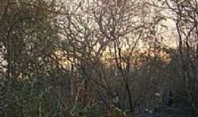
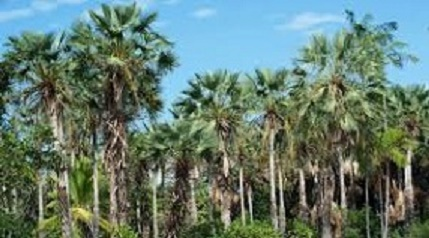

Biodiversidade local
A biodiversidade de Bom Princípio do Piauí, localizada na região de transição entre o Cerrado e a Caatinga, é caracterizada por uma rica diversidade de espécies vegetais e animais típicas desses dois biomas. A área possui formações rochosas, vegetação diversa e espécies como arara-vermelha, jacupemba e mocó. Além disso, estudos realizados no Bosque Sagrado da Guarita, próximo ao município, revelaram a presença de diversas espécies de briófitas, indicando a importância da área para a conservação da biodiversidade local.
Vegetação
A vegetação predominante na região de Bom Princípio do Piauí é a Caatinga, um bioma exclusivamente brasileiro que se caracteriza por ser semiárido. Além da Caatinga, ocorrem transições vegetacionais entre a Caatinga, Cerrado e áreas de floresta ciliar de carnaúba, especialmente em áreas de várzea e solos hidromórficos.
 Fauna nativa da região
A fauna nativa da região de Bom Princípio do Piauí, localizada no bioma Caatinga, é rica em espécies adaptadas ao clima semiárido. Entre os animais mais comuns, destacam-se diversas aves como o galo-de-campina, o corrupião e o canário-da-terra. Além disso, a região abriga répteis como cobras (jararacas, corais, cascavéis), lagartos e jabutis, além de mamíferos como o tatu-bola e o veado-catingueiro
Flora nativa da região
A região de Bom Princípio do Piauí apresenta uma flora típica do bioma da Caatinga, com espécies adaptadas à seca e ao clima quente e seco . A vegetação predominante inclui árvores e arbustos com folhas pequenas e espinhos, como o juazeiro, a aroeira, o marmeleiro e a catingueira. Plantas suculentas como o xique-xique e o mandacaru também são comuns.